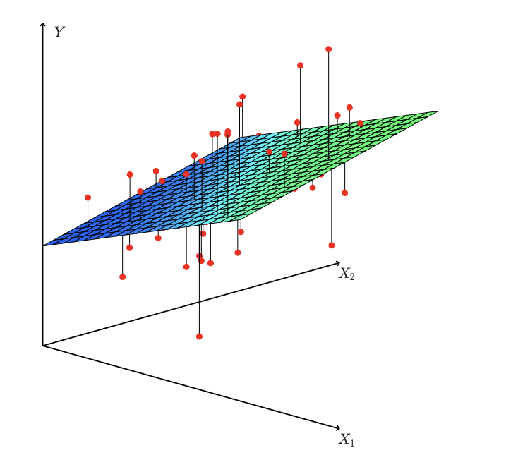

Linear Regression¶
[65]:
#imports for practical example
import numpy as np
import matplotlib.pyplot as plt
from create_data import (get_data_scaled, get_data_unscaled)
from sklearn.linear_model import LinearRegression
import matplotlib.pyplot as plt
import pandas as pd
[66]:
#load data from data.py
train_x, test_x, train_y, test_y = get_data_scaled()
[67]:
sklearn_model = LinearRegression()
sklearn_model.fit(train_x, train_y)
predict = sklearn_model.predict(test_x)
metric = np.mean(np.abs(predict - test_y))
print("MAE is: " + str(metric))
MAE is: 1.1885641867958676
Theory of Multiple Linear Regression¶
\(\hat{y}\) = predicted value
\(\beta_0\) = intercept (the value of y when all x are zero)
\(\beta_1\) = coefficient for \(x_1\)
\(\beta_2\) = coefficient for \(x_2\)
\(\beta_n\) = coefficient for \(x_n\)
Together with this data we can calculate the error for each point:
The error is the difference between the actual value and the predicted value.
The goal is to minimize the error. We can do this by minimizing the sum of the squared errors:
This is called the residual sum of squares (RSS).
[68]:
#plot of predicted y and actual y
#is of course not really relevant because test set does exist of only 3 data points
plt.plot(predict, label='Predicted')
plt.plot(test_y, label='Actual')
plt.legend()
plt.show()
Theory of standard scaling¶
Standard scaling is a method to standardize the range of independent variables or features of data. In data processing, it is also known as data normalization and is generally performed during the data preprocessing step.
\(x_{std}\) = standardized value
\(x\) = original value
\(\mu\) = mean (average value of the whole data)
\(\sigma\) = standard deviation (square root of the variance (average of the squared differences from the mean))
[72]:
#plot x and y without being scaled
train_x, test_x, train_y, test_y = get_data_unscaled()
ax = train_x.iloc[0].plot()
ax.set_xlabel("Values")
ax.set_ylabel("Electricity")
plt.show()
# todo fix that
# remove last git add
[72]:
| value_1 | value_2 | value_3 | value_4 | value_5 | value_6 | value_7 | value_8 | value_9 | value_10 | ... | value_991 | value_992 | value_993 | value_994 | value_995 | value_996 | value_997 | value_998 | value_999 | value_1000 | |
|---|---|---|---|---|---|---|---|---|---|---|---|---|---|---|---|---|---|---|---|---|---|
| 0 | 1011.96875 | 1011.87500 | 1011.78125 | 1011.68750 | 1011.53125 | 1011.3750 | 1011.28125 | 1011.03125 | 1011.00000 | 1011.18750 | ... | 937.93750 | 937.09375 | 937.46875 | 937.40625 | 936.81250 | 937.1875 | 937.43750 | 938.75000 | 938.46875 | 937.43750 |
| 1 | 1016.34375 | 1016.31250 | 1015.25000 | 1015.15625 | 1014.75000 | 1015.1250 | 1015.09375 | 1014.78125 | 1014.78125 | 1014.37500 | ... | 1011.56250 | 1011.56250 | 1011.62500 | 1011.62500 | 1011.65625 | 1011.6875 | 1011.65625 | 1011.56250 | 1011.56250 | 1011.62500 |
| 2 | 1014.81250 | 1014.68750 | 1014.65625 | 1014.62500 | 1014.15625 | 1014.0625 | 1014.03125 | 1013.81250 | 1013.62500 | 1013.56250 | ... | 918.46875 | 918.87500 | 918.87500 | 917.96875 | 917.90625 | 918.7500 | 918.34375 | 918.50000 | 918.62500 | 918.31250 |
| 3 | 1016.25000 | 1010.46875 | 1008.50000 | 1008.09375 | 1007.84375 | 1007.6250 | 1007.12500 | 1006.87500 | 1006.62500 | 1006.46875 | ... | 734.09375 | 734.43750 | 734.43750 | 733.68750 | 733.56250 | 733.3125 | 733.00000 | 733.34375 | 732.62500 | 732.84375 |
| 4 | 1019.65625 | 1019.56250 | 1019.43750 | 1019.43750 | 1019.21875 | 1019.2500 | 1019.18750 | 1019.21875 | 1019.15625 | 1018.90625 | ... | 1016.56250 | 1016.56250 | 1016.50000 | 1016.50000 | 1016.43750 | 1016.5000 | 1016.56250 | 1016.59375 | 1016.53125 | 1016.50000 |
5 rows × 1000 columns
[ ]:
#plot x and y with being scaled
train_x, test_x, train_y, test_y = get_data_scaled()
train_x_to_df = pd.DataFrame(train_x)
ax = train_x_to_df.iloc[0].plot()
ax.set_xlabel("Values")
ax.set_ylabel("Electricity")
plt.show()
train_x_to_df.head()
# todo check why plots looking different
| 0 | 1 | 2 | 3 | 4 | 5 | 6 | 7 | 8 | 9 | ... | 990 | 991 | 992 | 993 | 994 | 995 | 996 | 997 | 998 | 999 | |
|---|---|---|---|---|---|---|---|---|---|---|---|---|---|---|---|---|---|---|---|---|---|
| 0 | -0.468095 | -0.258494 | -0.191027 | -0.115793 | -0.093305 | -0.088048 | -0.073737 | -0.082958 | -0.063774 | -0.019171 | ... | -0.023533 | -0.033599 | -0.029250 | -0.029470 | -0.035776 | -0.031212 | -0.027540 | -0.011722 | -0.015265 | -0.028573 |
| 1 | 0.387259 | 0.544838 | 0.400077 | 0.429658 | 0.394722 | 0.465804 | 0.475310 | 0.448155 | 0.465134 | 0.421656 | ... | 0.821123 | 0.820272 | 0.820925 | 0.820886 | 0.821498 | 0.821306 | 0.821335 | 0.820462 | 0.820560 | 0.819868 |
| 2 | 0.087885 | 0.250660 | 0.298897 | 0.346120 | 0.304698 | 0.308879 | 0.322297 | 0.310951 | 0.303402 | 0.309289 | ... | -0.246887 | -0.242498 | -0.242420 | -0.252174 | -0.252332 | -0.242196 | -0.245924 | -0.243162 | -0.242178 | -0.247295 |
| 3 | 0.368930 | -0.513071 | -0.750179 | -0.680900 | -0.652404 | -0.641901 | -0.672289 | -0.671609 | -0.675733 | -0.671769 | ... | -2.362111 | -2.357288 | -2.356929 | -2.363564 | -2.363838 | -2.364194 | -2.365787 | -2.359338 | -2.369084 | -2.368397 |
| 4 | 1.034885 | 1.133194 | 1.113662 | 1.102872 | 1.072274 | 1.075043 | 1.064861 | 1.076640 | 1.077093 | 1.048323 | ... | 0.878485 | 0.877602 | 0.876815 | 0.876741 | 0.876263 | 0.876377 | 0.877450 | 0.877964 | 0.877378 | 0.875621 |
5 rows × 1000 columns
Theory of MSE (mean squared error)¶
\(y_i\) and \(\hat{y}_i\) are again predicted and actual value at an data point \(i\).
